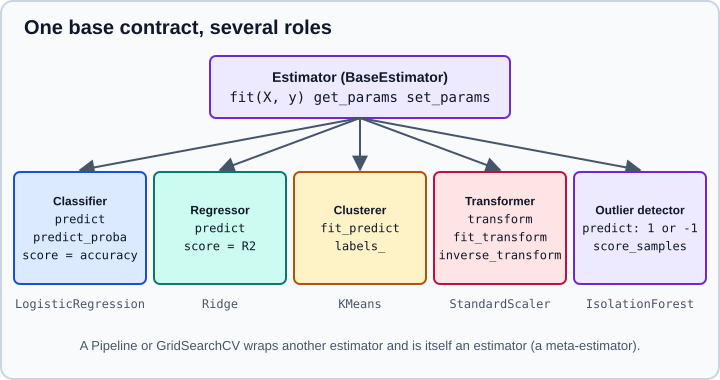

Glossary of Key Terms in scikit-learn
|
This content was generated with the assistance of AI and should be verified against the official documentation before being relied on in production. |
scikit-learn is consistent: almost every object follows a handful of conventions, and the documentation assumes you know
the words for them. This page is a working glossary of that vocabulary. Each entry says what the term means, shows the
code that makes it concrete, and points out the traps. It targets scikit-learn 1.9 (1.9.1 at the time of writing) with NumPy 2.5 and pandas 3.1, and was checked in October 2026; every example was run with Python
3.13 and scikit-learn 1.9.1 and the printed output is the real output. Examples target Python 3.13 or 3.14 and were run on Python 3.13. The project is named scikit-learn; sklearn
is only the name you import. The glossary mirrors the official glossary and keeps to the terms you meet every day. For a
guided introduction see
Getting Started, and for the detailed life cycle of the central
objects see The Estimator API and
get_params, set_params and clone.
The core objects
Estimator
An estimator is any object that learns from data. It is created with its hyperparameters (the constructor
arguments), does nothing until you call fit, and after fit holds what it learned in fitted attributes. Every
estimator inherits from BaseEstimator, which provides get_params, set_params, a readable repr and the HTML
display you see in a notebook. The constructor must only store its arguments, unchanged, under attributes with the same
names; all validation and computation belongs in fit. That rule is what makes clone and grid search possible.
The estimator then plays one or more roles, each one a convention about which methods exist:
| Role | Characteristic methods | Typical classes |
|---|---|---|
Predictor (supervised) |
|
Every classifier and regressor |
Classifier |
|
|
Regressor |
|
|
Transformer |
|
|
Clusterer |
|
|
Outlier detector |
|
|
Density estimator |
|
|
Meta-estimator |
takes other estimators as parameters and delegates to them |
|

A single class can play several roles. KMeans is a clusterer and also a transformer (its transform returns the
distances to the centres), and GaussianMixture is a clusterer and a density estimator. The role a class plays is
declared by a mixin (ClassifierMixin, RegressorMixin, TransformerMixin, ClusterMixin, OutlierMixin) and, since
scikit-learn 1.6, by its tags (see Tags).
The example below fits a classifier on the iris data and shows the lifecycle: unfitted, fitted, fitted attributes, prediction methods and the default score.
from sklearn.datasets import load_iris
from sklearn.exceptions import NotFittedError
from sklearn.linear_model import LogisticRegression
from sklearn.utils.validation import check_is_fitted
X, y = load_iris(return_X_y=True, as_frame=True)
clf = LogisticRegression(C=0.5, max_iter=200) # hyperparameters only; nothing is learned yet
print(clf)
try:
check_is_fitted(clf)
except NotFittedError as error:
print("NotFittedError:", error)
clf.fit(X, y) # learns coef_, intercept_, classes_, ...
check_is_fitted(clf) # silent when fitted
print(clf.classes_, clf.n_features_in_)
print(list(clf.feature_names_in_))
print([name for name in vars(clf) if name.endswith("_") and not name.startswith("_")])
print(clf.predict(X.iloc[:3]))
print(clf.predict_proba(X.iloc[:2]).round(3))
print(clf.decision_function(X.iloc[:2]).round(2))
print(round(clf.score(X, y), 3)) # mean accuracy for a classifierOutput with scikit-learn 1.9.1:
LogisticRegression(C=0.5, max_iter=200)
NotFittedError: This LogisticRegression instance is not fitted yet. Call 'fit' with appropriate arguments before using this estimator.
[0 1 2] 4
['sepal length (cm)', 'sepal width (cm)', 'petal length (cm)', 'petal width (cm)']
['feature_names_in_', 'n_features_in_', 'classes_', 'n_iter_', 'coef_', 'intercept_']
[0 0 0]
[[0.97 0.03 0. ]
[0.956 0.044 0. ]]
[[ 5.92 2.45 -8.38]
[ 5.64 2.56 -8.2 ]]
0.967Four things are worth noticing in the output:
-
reprshows only the hyperparameters that differ from the defaults (C=0.5, max_iter=200). -
check_is_fittedraisesNotFittedError(which is both aValueErrorand anAttributeError) beforefit, and returns silently afterwards. Every prediction method calls it for you. -
The fitted attributes all end with an underscore:
coef_,intercept_,classes_,n_iter_. That suffix is how you tell learned state from configuration.n_features_in_andfeature_names_in_are the two that nearly every estimator records. -
predict_probarows sum to one, anddecision_functionreturns the raw scores before they are turned into probabilities.
Meta-estimator
A meta-estimator has one or more estimators as constructor arguments. It is itself an estimator: you fit it, and it
fits (clones of) the wrapped estimators. A Pipeline chains transformers and a final estimator, GridSearchCV searches
the hyperparameters of the wrapped estimator, OneVsRestClassifier turns a binary classifier into a multiclass one.
Meta-estimators never modify the estimator you pass in; they fit a clone, so the object you passed stays unfitted and can
be reused. The parameters of a wrapped estimator are reached with a double underscore, covered next.
Hyperparameter, parameter and attribute
-
A hyperparameter (in scikit-learn usually just parameter or argument) is chosen by you before fitting and passed to the constructor:
C,max_iter,n_estimators. -
A fitted attribute is learned during
fitand ends with an underscore:coef_,feature_importances_,cluster_centers_. -
Properties that are not learned but derived from the hyperparameters have no underscore.
get_params(deep=True) returns the hyperparameters as a dictionary and set_params(**params) changes them. For a
meta-estimator the dictionary also contains the parameters of the wrapped estimators, named
<name>__<parameter>, where <name> is the step name in a Pipeline or the argument name (estimator) in other
meta-estimators. This notation is what you put in a hyperparameter grid, for example ridge__alpha or
svc__C.
clone(estimator) builds a new, unfitted estimator with the same hyperparameters, which is what cross-validation and
search do for every fold. Keyword-only arguments (since scikit-learn 1.0 almost every parameter after the first few has
to be named) protect your code from positional mistakes.
from sklearn.base import clone, is_classifier, is_regressor
from sklearn.linear_model import LogisticRegression, Ridge
from sklearn.pipeline import make_pipeline
from sklearn.preprocessing import StandardScaler
pipe = make_pipeline(StandardScaler(), Ridge())
print([name for name in pipe.get_params() if name.startswith("ridge")])
pipe.set_params(ridge__alpha=10.0) # step name, two underscores, parameter name
print(pipe.get_params()["ridge__alpha"], pipe.named_steps["ridge"].alpha)
original = LogisticRegression(C=0.5)
copy = clone(original) # same hyperparameters, never fitted
print(copy.get_params()["C"], copy is original, hasattr(copy, "coef_"))
print(is_classifier(original), is_regressor(original), is_regressor(pipe))
try:
Ridge(1.0, True) # fit_intercept is keyword-only
except TypeError as error:
print("TypeError:", error)Output with scikit-learn 1.9.1:
['ridge', 'ridge__alpha', 'ridge__copy_X', 'ridge__fit_intercept', 'ridge__max_iter', 'ridge__positive', 'ridge__random_state', 'ridge__solver', 'ridge__tol']
10.0 10.0
0.5 False False
True False True
TypeError: Ridge.__init__() takes from 1 to 2 positional arguments but 3 were givenSource: get_params and sklearn.base.clone.
A Pipeline inherits its role from its last step, which is why is_regressor(pipe) is true here although the
pipeline contains a scaler. The clone has the same C but is a different object and is not fitted.
Data
| Term | Meaning |
|---|---|
|
The feature matrix of shape |
|
The target of shape |
|
The two dimensions of |
|
An optional |
|
A constructor argument of many classifiers: a dictionary |
|
An optional array passed to |
|
The sorted array of labels a classifier learned. Columns of |
array-like |
Anything |
sparse matrix |
A SciPy sparse matrix or array ( |
|
The column names of a DataFrame seen during |
|
Returns the names of the columns that |
Methods
| Method | Meaning |
|---|---|
|
Learns from the data and returns |
|
Returns the predicted label (classifier), value (regressor) or cluster (inductive clusterer) for each row. |
|
Class probabilities of shape |
|
The logarithm of |
|
A real-valued confidence score per sample (per class for multiclass): the signed distance to the boundary for linear
models and SVMs. Thresholding it gives |
|
The default metric of the estimator: mean accuracy for classifiers, R2 for regressors. It is the default |
|
Applies the learned transformation. Only meaningful after |
|
|
|
Maps transformed data back to the input space, when that is possible (scalers, PCA, not one-hot encoders with dropped categories). |
|
|
|
The raw score of each sample: the log-likelihood for density estimators, an anomaly score for outlier detectors. |
|
Updates the model with one batch instead of refitting; used for out-of-core learning. Classifiers need |
|
Chooses the container |
Two mechanics deserve a demonstration: partial_fit for data that arrives in batches, and warm_start for adding to an
existing fit. Both are common in large problems, and both change what fit means.
import numpy as np
from sklearn.datasets import load_iris, make_classification
from sklearn.ensemble import RandomForestClassifier
from sklearn.linear_model import LogisticRegression, SGDClassifier
from sklearn.multiclass import OneVsRestClassifier
from sklearn.utils import get_tags
X, y = make_classification(n_samples=300, n_features=8, random_state=1)
# partial_fit: learn in batches (classes must be given on the first call)
sgd = SGDClassifier(random_state=0)
for start in range(0, 300, 100):
sgd.partial_fit(X[start:start + 100], y[start:start + 100], classes=np.unique(y))
print("partial_fit accuracy:", round(sgd.score(X, y), 3))
# warm_start: add trees without rebuilding the first ones
forest = RandomForestClassifier(n_estimators=10, warm_start=True, random_state=0).fit(X, y)
forest.set_params(n_estimators=25).fit(X, y)
print("trees:", len(forest.estimators_))
# tags describe capabilities (scikit-learn 1.6 and later)
tags = get_tags(LogisticRegression())
print(tags.estimator_type, tags.input_tags.sparse, tags.classifier_tags.multi_class)
print("allows NaN:", get_tags(RandomForestClassifier()).input_tags.allow_nan, get_tags(LogisticRegression()).input_tags.allow_nan)
# a meta-estimator wraps another estimator and exposes its parameters with the estimator__ prefix
Xi, yi = load_iris(return_X_y=True)
ovr = OneVsRestClassifier(LogisticRegression(max_iter=1000)).fit(Xi, yi)
print(len(ovr.estimators_), ovr.get_params()["estimator__C"])Output with scikit-learn 1.9.1:
partial_fit accuracy: 0.883
trees: 25
classifier True True
allows NaN: True False
3 1.0Source: partial_fit, warm_start and Estimator tags.
Common parameters
These argument names recur across the library with the same meaning.
| Parameter | Meaning |
|---|---|
|
Seeds the pseudo-random choices of the estimator. An integer gives reproducible results, |
|
The number of parallel jobs. |
|
Prints progress. An integer, larger means more output. |
|
The iteration budget and the convergence tolerance of iterative solvers. After |
|
If true, |
|
Whether a transformer may overwrite its input in place to save memory. |
|
The cross-validation strategy: an integer (number of folds; stratified for classifiers), a splitter object, an iterable
of |
|
The metric to evaluate: a name such as |
|
In searches, whether to refit the best candidate on the whole training set after the search. |
|
The output type of encoders; |
The next example touches several of them at once: reproducibility through random_state, the effect of
sample_weight and class_weight, a splitter passed as cv, and scorers.
import numpy as np
from sklearn.datasets import make_classification
from sklearn.ensemble import RandomForestClassifier
from sklearn.linear_model import LogisticRegression
from sklearn.metrics import get_scorer, make_scorer, accuracy_score
from sklearn.model_selection import StratifiedKFold, cross_val_score, cross_validate
X, y = make_classification(n_samples=300, n_features=8, weights=[0.8], random_state=1)
# random_state: same integer, same forest
a = RandomForestClassifier(n_estimators=20, random_state=0).fit(X, y).predict_proba(X[:2])
b = RandomForestClassifier(n_estimators=20, random_state=0).fit(X, y).predict_proba(X[:2])
print("reproducible:", np.allclose(a, b))
# sample_weight and class_weight
weights = np.where(y == 1, 4.0, 1.0)
model = LogisticRegression().fit(X, y, sample_weight=weights)
print("weighted accuracy:", round(model.score(X, y, sample_weight=weights), 3))
plain = LogisticRegression().fit(X, y)
balanced = LogisticRegression(class_weight="balanced").fit(X, y)
print("share predicted as class 1:", round(plain.predict(X).mean(), 3), round(balanced.predict(X).mean(), 3))
# cv, scoring and scorers
cv = StratifiedKFold(n_splits=5, shuffle=True, random_state=0)
print(cross_val_score(LogisticRegression(), X, y, cv=cv, scoring="f1").round(3))
result = cross_validate(LogisticRegression(), X, y, cv=3, scoring=["accuracy", "roc_auc"])
print(sorted(result))
print(get_scorer("neg_log_loss"))
scorer = make_scorer(accuracy_score) # scorer(estimator, X, y)
print(round(scorer(plain, X, y), 3))Output with scikit-learn 1.9.1:
reproducible: True
weighted accuracy: 0.867
share predicted as class 1: 0.18 0.28
[0.8 0.6 0.88 0.783 0.72 ]
['fit_time', 'score_time', 'test_accuracy', 'test_roc_auc']
make_scorer(log_loss, greater_is_better=False, response_method='predict_proba')
0.92Source: random_state, Metrics and scoring and Cross-validation.
A few details of the output matter. cross_validate returns a dictionary with fit_time, score_time and one
test_<name> entry per metric. A scorer follows the "greater is better" convention, so error metrics are negated
(neg_log_loss, neg_mean_squared_error) and make_scorer(log_loss, greater_is_better=False, ...) tells you the
convention in its repr. The scorer also records which prediction method it needs (response_method='predict_proba').
Evaluation vocabulary
-
Metric (or score function): a function
metric(y_true, y_pred)insklearn.metrics, such asaccuracy_scoreormean_absolute_error. Some are "bigger is better" (scores), others "smaller is better" (losses or errors). -
Scorer: a callable
scorer(estimator, X, y)returning a number where bigger is better. Built from a metric withmake_scorer, or fetched by name withget_scorer. Search and cross-validation tools accept scorers. -
CV splitter: an object with
split(X, y, groups)that yields(train_indices, test_indices)andget_n_splits().KFold,StratifiedKFold,GroupKFold,TimeSeriesSplitandShuffleSplitare splitters. Passing an integer ascvis shorthand for a stratified k-fold when the estimator is a classifier andyis binary or multiclass, and a plain k-fold otherwise. Theshuffledefault isFalse, so ordered data stays ordered unless you ask. -
cv_results_: the dictionary of per-candidate results ofGridSearchCVandRandomizedSearchCV, which replaced the oldgrid_scores_. It converts directly to a DataFrame. -
Display: a plotting helper such as
ConfusionMatrixDisplaycreated byfrom_estimatororfrom_predictions. The oldplot_confusion_matrixfunctions no longer exist. -
Cross-fitting: producing a prediction or transformation for each sample from a model that did not see that sample.
cross_val_predictandTargetEncoder.fit_transformdo it. -
Data leakage: information from the test data, or from the target, reaching the model during training. Fitting a scaler on all the data before splitting is the classic case; keeping preprocessing inside a
Pipelineavoids it. See Common Pitfalls.
Task vocabulary
| Term | Meaning |
|---|---|
Supervised learning |
The target |
Unsupervised learning |
No target. Clustering, dimensionality reduction, density estimation, outlier detection. |
Semi-supervised learning |
Some targets are unknown, marked as |
Binary, multiclass |
Two classes, or more than two mutually exclusive classes, in a 1d |
Multilabel |
Each sample may have several labels at once; |
Multioutput |
Several targets predicted together; |
Inductive, transductive |
An inductive method learns a model that can predict for new samples ( |
Outlier detection, novelty detection |
Outlier detection looks for anomalies in the training data itself. Novelty detection fits on clean data and judges new
samples ( |
Precomputed |
Several estimators accept a precomputed kernel or distance matrix of shape |
Tags
Since scikit-learn 1.6 an estimator declares its capabilities through the __sklearn_tags__ method, which returns a
Tags dataclass. The old _more_tags and _get_tags mechanism is gone. Read tags with
sklearn.utils.get_tags(estimator) (shown in the earlier example): the estimator type (classifier, regressor,
transformer, clusterer, outlier_detector), input_tags.sparse, input_tags.allow_nan, input_tags.pairwise,
target_tags.required and the classifier or regressor sub-tags. Meta-estimators and pipelines forward the tags of the
estimators they wrap. The common test-suite and tools that need to know whether an estimator tolerates sparse input or missing values use
them.
Writing your own estimator
You can write a transformer or predictor that behaves like the built-in ones by following the same conventions:
store hyperparameters in __init__ without logic, inherit from BaseEstimator and the right mixin (put the mixin
first), validate input with validate_data, set fitted attributes ending in an underscore in fit and return self,
and check check_is_fitted in the other methods. check_estimator runs the library’s own test-suite against your
class and tells you which rule you broke.
import numpy as np
from sklearn.base import BaseEstimator, TransformerMixin
from sklearn.utils.estimator_checks import check_estimator
from sklearn.utils.validation import check_is_fitted, validate_data
class Multiplier(TransformerMixin, BaseEstimator):
"""Multiply every feature by a constant after centering on the training mean."""
def __init__(self, factor=2.0):
self.factor = factor # store hyperparameters unchanged
def fit(self, X, y=None):
X = validate_data(self, X) # checks X, sets n_features_in_ (and feature_names_in_)
self.mean_ = X.mean(axis=0) # learned state ends with an underscore
return self
def transform(self, X):
check_is_fitted(self)
X = validate_data(self, X, reset=False) # reset=False: compare with the fitted number of features
return (X - self.mean_) * self.factor
def get_feature_names_out(self, input_features=None):
return np.asarray(input_features if input_features is not None else self.feature_names_in_, dtype=object)
data = np.array([[1.0, 10.0], [3.0, 30.0]])
print(Multiplier(factor=3.0).fit_transform(data))
print(Multiplier().get_params())
check_estimator(Multiplier()) # raises with a description if a rule is broken
print("check_estimator passed")Output with scikit-learn 1.9.1:
[[ -3. -30.]
[ 3. 30.]]
{'factor': 2.0}
check_estimator passedSource: Developing scikit-learn estimators and check_estimator.
validate_data(self, X, reset=False) in transform is the public replacement of the private
_validate_data method that older tutorials call; it is available from scikit-learn 1.6 on. Do not call the private
name: it no longer exists in 1.9.
Global configuration
sklearn.set_config and the context manager sklearn.config_context change library-wide behaviour. The ones you will
meet:
-
transform_output="pandas"(or"polars"): transformers return DataFrames. The same option exists per estimator asset_output(transform=...). See pandas and polars Output. -
assume_finite=True: skips the check for NaN and infinity to save time, at your own risk. -
working_memory: the memory budget in MiB of chunked computations such as pairwise distances. -
display="text"or"diagram": how an estimator is shown in a notebook. -
enable_metadata_routing=True: opts into metadata routing, see Metadata Routing. -
array_api_dispatch=True: experimental array API support, see Array API and GPU.
The output below also shows the exceptions and warnings you meet most often. ConvergenceWarning means a solver stopped at
max_iter: scale the features or raise the limit. A ValueError about NaN means the estimator does not support missing
values (check the allow_nan tag or use an imputer). DataConversionWarning flags a column-vector y.
import warnings
import numpy as np
import pandas as pd
from sklearn import config_context, get_config
from sklearn.datasets import make_classification
from sklearn.exceptions import ConvergenceWarning
from sklearn.linear_model import LogisticRegression
from sklearn.preprocessing import StandardScaler
X, y = make_classification(n_samples=200, n_features=5, random_state=0)
frame = pd.DataFrame(X, columns=list("abcde"))
with warnings.catch_warnings(record=True) as caught:
warnings.simplefilter("always")
LogisticRegression(max_iter=2).fit(X * 1000, y)
print(caught[0].category.__name__, issubclass(caught[0].category, ConvergenceWarning))
try:
LogisticRegression().fit(np.array([[1.0], [np.nan]]), [0, 1])
except ValueError as error:
print("ValueError:", str(error).splitlines()[0])
with warnings.catch_warnings(record=True) as caught:
warnings.simplefilter("always")
LogisticRegression().fit(X, y.reshape(-1, 1)) # a column vector instead of a 1d y
print(caught[0].category.__name__)
print(get_config()["transform_output"])
print(type(StandardScaler().fit_transform(frame)).__name__)
with config_context(transform_output="pandas"):
print(type(StandardScaler().fit_transform(frame)).__name__)Output with scikit-learn 1.9.1:
ConvergenceWarning True
ValueError: Input X contains NaN.
DataConversionWarning
default
ndarray
DataFrameSource: sklearn.set_config and sklearn.exceptions.
Names that changed
Older books, blog posts and answers use names that no longer exist. Replace them as follows. Dates are the scikit-learn version in which the change happened.
| Old name | Use instead | Since |
|---|---|---|
|
|
0.18 |
|
|
0.18 |
|
|
0.20 |
|
|
removed |
forests |
|
0.22 |
|
|
1.2 ( |
|
|
1.2 |
|
|
deprecated in 1.0 |
|
|
removed in 1.4 |
|
|
removed in 1.4 |
|
|
deprecated in 1.2, removed in 1.4 |
|
|
1.6 |
|
|
1.6 |
The positional-argument change is the one that breaks old code most visibly. Since scikit-learn 1.0 almost every
estimator takes its optional parameters by keyword only, so LogisticRegression("l2", 0.5) or Ridge(1.0, True) fails
with a TypeError. Write Ridge(alpha=1.0, fit_intercept=True).
Pitfalls
-
Learned state versus configuration. Never read fitted attributes before
fit, and never set them yourself in production code: they are an implementation detail of the fit. -
Fitting a transformer on the test set. Call
fit(orfit_transform) on training data only andtransformon everything. APipelinedoes this for you inside cross-validation. -
Mutating a shared estimator.
set_paramsandfitchange the object in place. Useclonewhen you need a fresh copy, for example in a loop over folds that you write yourself. -
Assuming
scoreis the metric you need. It is accuracy or R2 by default. Passscoringexplicitly. -
A 1d array as
X. Reshape to a column withreshape(-1, 1). -
Relying on column order of DataFrames. After
fiton a DataFrame the names are recorded and checked. Reordering columns later raises an error instead of silently producing wrong predictions. -
Trusting
random_state=None. Results differ from run to run, which makes comparisons between models meaningless.